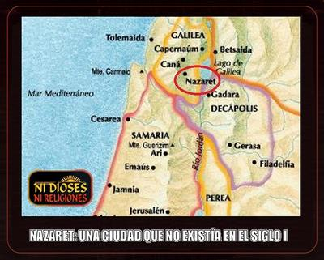

La figura de «Jesús de Nazaret» es fundamental en la religión más grande del mundo, con más de 2.400 millones de seguidores. Sin embargo, bajo un criterio estrictamente arqueológico, Nazaret no existía como localidad reconocible en los tiempos en que habría nacido y vivido este personaje, de tal forma que lo que los evangelios mencionan como su lugar de origen, no es un dato histórico, sino más bien un artificio literario y teológico destinado a dar coherencia a la narrativa mesiánica.


Obviamente, ahora sí existe Nazaret (al-Nāṣira en árabe y Nāṣraṯ en hebreo), siendo la ciudad más poblada del distrito Norte de Israel, con más de 77 mil habitantes, así como la que tiene mayor población árabe y un 60% de musulmanes[1]. Y en la actual Nazaret se han hecho excavaciones, especialmente bajo la Basílica de la Anunciación y sus alrededores, que documentan presencia humana en el siglo I de nuestra era, consistente en viviendas dispersas, silos agrícolas y cuevas funerarias. Arqueólogos como el británico Kenneth Rainsbury Dark (1961-), más conocido como Ken Dark, han publicado informes que confirman la existencia de un asentamiento muy modesto, probablemente un conjunto de granjas familiares y pequeñas chozas, pero sin la infraestructura ni la relevancia de un centro urbano[2].
En otras palabras, la zona posteriormente conocida como Nazaret, de haber existido en los supuestos tiempos de Jesús, sería un modesto asentamiento rural, no una población reconocida, ni como una ciudad, ni como una referencia administrativa.
El origen de Nazaret es controversial, debido a que no es mencionada por historiadores o geógrafos del siglo primero. Y esa ausencia en los supuestos tiempos de Jesús, concuerda con fuentes contemporáneas clave:
Flavio Josefo, historiador judío del siglo I, documenta unas 45 ciudades y aldeas de Galilea, pero no menciona a Nazaret.
El Talmud, enumera unas 63 localidades galileas, pero tampoco registra a Nazaret.
El Antiguo Testamento guarda completo silencio sobre este lugar.
Una triple ausencia que sugiere que la mención de Nazaret en los evangelios es más motivada por necesidades narrativas, que por hechos históricos verificables. Ahora bien, en lo que sí están de acuerdo los arqueólogos profesionales, es que la zona actual de Nazaret se ha mantenido continuamente ocupada desde el período helenístico tardío, pasando por los períodos romano temprano y bizantino.
Curiosamente, el nombre de Nazaret aparece por primera vez en los evangelios —escritos mucho tiempo después de Jesús: Mateo lo menciona tres veces, todas como la supuesta ciudad de Jesús (una ciudad que todavía no existía). Después aparece en el evangelio de Marcos una sola vez, cuando Jesús viajó supuestamente desde allí hasta el sitio del río Jordán donde sería bautizado por su pariente Juan (Marcos 1:9). Pero Lucas es quien más menciona esta futura ciudad, un total de cinco veces, siendo la primera cuando Gabriel anunció a María el nacimiento de Jesús (Lucas 1:26). Juan por su parte, sólo la menciona dos veces, cuando Felipe le comenta a Natanael que habían encontrado «a aquel de quien escribió Moisés en la ley, así como los profetas», es decir, al mesías, y que se trataba de «Jesús, el hijo de José, de Nazaret.» (Juan 1:45). Pero lo curioso es que entonces Natanael le respondió: «¿De Nazaret puede salir algo de bueno?» (Juan 1:46).
Después la palabra Nazaret aparece en Hechos de los Apóstoles, por primera vez como una especie de apellido de Jesús, cuando éste ya habría fallecido y era identificado como el «Cristo», y sus supuestos discípulos comienzan a referirse a él como «Jesucristo de Nazaret» (Hechos 3:6), como se menciona dos veces, o como «Jesús de Nazaret» (Hechos 6:14), como se menciona cuatro veces. Y Pablo, por su parte, quien escribió buena parte del Nuevo Testamento, no menciona nunca esa palabra.
Entonces, ¿de dónde proviene el apelativo de «nazareno» aplicado a Jesús? —Algunos investigadores sostienen que el término «nazareno» (nazōraios en griego) no designaba originalmente un origen geográfico, sino que era una adaptación de una palabra aramea con que algunos escritos rabínicos posteriores apodaban a Jesús. «Esta palabra aparece doce veces en los manuscritos griegos sobrevivientes del Nuevo Testamento, 10 veces como Nazaret o Nazareth, y dos como Nazará»[1]. Se ha interpretado que esta palabra provendría de hebreo נצר (natser, transcrito Nazer), que significa «brote», en alusión a la profecía de Isaías sobre el Mesías: «Saldrá una vara del tronco de Isaí y un vástago [Nétzer] retoñará de sus raíces» (Isaías 11:1).
Sin embargo, otra hipótesis muy plausible es que el apelativo de «nazareno» aplicado a Jesús proviene de un estatus religioso o ascético: el hebreo «nazir» indicaba a una persona consagrada a «Dios», que cumplía votos de abstinencia y santidad conforme a los preceptos instituidos por Moisés. La Torá establecía que la persona que hiciera este voto, «Todo el tiempo de su nazareato, será santo para Jehová.» (Números 6:2-12).
Era, pues, una costumbre judía de consagrarse a «Dios» durante cierto tiempo, dejándose crecer el cabello como signo de la consagración, y absteniéndose de consumir licor y tener relaciones de pareja. A ese tipo de consagración, llamada «nazareato», se habría sometido Sansón (Jueces 13:5).
Al final, los traductores y copistas (no familiarizados con las costumbres judaicas) habrían tenido la necesidad de insistir que la ciudad de Jesús era Nazaret, para justificar su sobrenombre de «nazareno». Así, Mateo menciona que cuando José, María y Jesús se trasladan desde Egipto de regreso a su región de Galilea, lo hacen a la ciudad de Nazaret, donde según dice, habría crecido Jesús. Pero aclara que esto era «para que se cumpliese lo que fue dicho por los profetas, que habría de ser llamado nazareno.» (Mateo 2:23). Sin embargo, se trata de una predicción inexistente en los textos proféticos del Antiguo Testamento, lo que evidencia un uso deliberado de recursos literarios y teológicos, más que un registro histórico.
Hay sin embargo un pasaje que puede aclarar la situación: Marcos, el primer escritor evangélico canónico, menciona que cuando Jesús se encontraba en Cafarnaúm, una ciudad de Galilea que sí existía, «estaba en casa» (Marcos 2:1), de lo que se deduce que esa era la ciudad donde Jesús vivía con su familia, y no Nazaret, como lo resaltan otros evangelistas posteriores (Lucas 2:4, Lucas 1:26, Mateo 2:23, Lucas 2:39).
Así que lo más probable es que los redactores reinterpretaran «nazir/nazareo» como si proviniera de un lugar llamado Nazaret, creando un gentilicio, «nazareno», que armonizara con la narrativa mesiánica.
Por tanto, es obvio que en este tema de «Jesús de Nazaret», hay signos de manipulación en los evangelios. El análisis de los textos revela anacronismos y contradicciones que refuerzan la idea de que la relación de Jesús con una ciudad todavía inexistente, fue construida post factum:
En Marcos 2:1, considerado el evangelio más antiguo, Jesús está «en casa» en Cafarnaúm, no en Nazaret, sugiriendo que su residencia real era otra localidad de Galilea.
Los evangelios de Mateo y Lucas, redactados posteriormente, fijan a Nazaret como ciudad de origen, probablemente para dar sentido al término «nazareno», y esto lo vinculan con una profecía inventada.
La incredulidad de Natanael en Juan 1:46 (»¿De Nazaret puede salir algo bueno?») refleja la percepción de los evangelistas sobre la insignificancia del lugar, reforzando la idea de que Nazaret no era reconocido como una ciudad en el imaginario colectivo judío de la época.
En conclusión, desde una perspectiva arqueológica y filológica, se puede afirmar que:
Nazaret no existía como ciudad o población reconocida en tiempos de Jesús. Para entonces, lo que hoy se llama Nazaret habría sido un caserío rural muy pequeño, con pocas viviendas y sin relevancia administrativa.
El término «nazareno» surgió probablemente de la reinterpretación del estatus religioso nazir, y fue proyectado posteriormente sobre un supuesto lugar de origen.
Los evangelios muestran claros signos de manipulación literaria: inventan topónimos, construyen profecías inexistentes y cometen anacronismos geográficos.
En suma, «Jesús de Nazaret» combina hechos históricos dudosos con invenciones teológicas. Quizás por eso y otros detalles, alguien dijo que «Jesús de Nazaret es el personaje imaginario más famoso del mundo». La arqueología moderna documenta ocupación humana en la zona hoy conocida como Nazaret, pero niega que existiera una ciudad o población reconocida con ese nombre en el siglo I. La narrativa evangélica, en este aspecto, no puede tomarse como un registro histórico confiable, sino como una construcción literaria de los autores cristianos.
[Godless Freeman]
Comentarios
Comments powered by Disqus